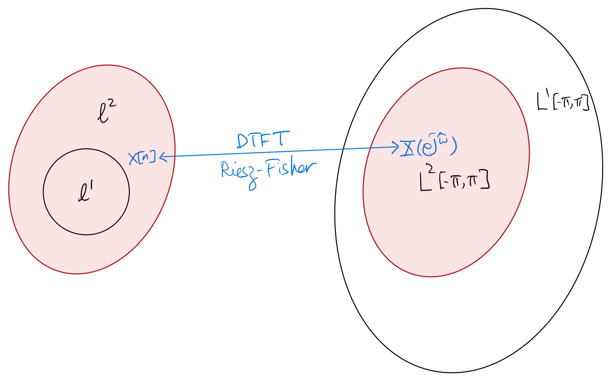

2.1. Discrete-Time Fourier Transform (DTFT)#
For a discrete-time signal \(x{n]\):
Forward DTFT:
(2.1)#\[\begin{equation} X(e^{j\hat\omega}) = \sum_{n=-\infty}^{\infty} x[n] e^{-j\hat\omega n} \end{equation}\]Inverse DTFT:
(2.2)#\[\begin{equation} x[n] = \frac{1}{2\pi} \int_{-\pi}^{\pi} X(e^{j\hat\omega}) e^{j\hat\omega n} d\hat\omega \end{equation}\]
Notation
We use the notation \(x[n] \stackrel{\text{DTFT}}{\longleftrightarrow} X(e^{j\hat\omega})\) to denote the mapping between the signal \(x[n]\) and its DTFT \(X(e^{j\hat\omega})\) according to the forward and inverse DTFT formulas above.
A signal \(x[n]\) is absolutely summable, denoted by \(x[n] \in \ell^1\), if \(\sum_{n=-\infty}^{\infty} |x[n]| < \infty\).
A DTFT function \(X(e^{j\hat\omega})\) is absolutely integrable over \([-\pi,\pi]\), denoted by \(X(e^{j\hat\omega}) \in L^1[-\pi,\pi]\), if \(\frac{1}{2\pi} \int_{-\pi}^{\pi} |X(e^{j\hat\omega})| d\hat\omega < \infty\).
A signal \(x[n]\) has finite energy, denoted by \(x[n] \in \ell^2\), if \(\sum_{n=-\infty}^{\infty} |x[n]|^2 < \infty\).
A DTFT function \(X(e^{j\hat\omega})\) is square-integrable over \([-\pi,\pi]\), denoted by \(X(e^{j\hat\omega}) \in L^2[-\pi,\pi]\), if \(\frac{1}{2\pi} \int_{-\pi}^{\pi} |X(e^{j\hat\omega})|^2 d\hat\omega < \infty\).
Tip
\(x[n] \in \ell^1\) implies \(x[n] \in \ell^2\).
\(X(e^{j\hat\omega}) \in L^2[-\pi,\pi]\) implies \(X(e^{j\hat\omega}) \in L^1[-\pi,\pi]\)
When considering a DTFT \(X(e^{j\hat\omega})\) in \(L^p[-\pi,\pi]\) (\(p=1,2\)), we often do not make any distinction between \(X(e^{j\hat\omega})\) and another DTFT \(\tilde{X}(e^{j\hat\omega})\) such that \(\frac{1}{2\pi} \int_{-\pi}^{\pi} \left|\tilde{X}(e^{j\hat\omega}) - X(e^{j\hat\omega}) \right|^p d\hat\omega = 0\). In fact, we will group all such DTFTs in an equivalence class and consider the equivalence class as a unique member of \(L^p[-\pi,\pi]\).
2.1.1. About convergence …#
The RHS of the forward DTFT formula (2.1) is an infinite series, and thus we need to be a bit more careful about the condition for it to converge as well as the type of the convergence. In addition, we also want a more careful specification for what the DTFT mapping \(x[n] \stackrel{\text{DTFT}}{\longleftrightarrow} X(e^{j\hat\omega})\) actually means.
A simple sufficient condition that guarantees uniform convergence and continuity of the infinite series \(\sum_{n=-\infty}^{\infty} x[n] e^{-j\hat\omega n}\) on \([-\pi,\pi]\) is \(x[n] \in \ell^1\). Under this condition, the DTFT as defined by (2.1) \(X(e^{j\hat\omega}) = \sum_{n=-\infty}^{\infty} x[n] e^{-j\hat\omega n} \in L^1[-\pi,\pi]\). Thus, the integral on RHS of the inverse formula (2.2) exists for each \(n \in \mathbb{Z}\) and the inverse formula holds (recall the orthonormality of \(\{e^{j\hat\omega n}\}_{n \in \mathbb{Z}}\) on \([-\pi,\pi]\)).
On the other hand, given any DTFT \(X(e^{j\hat\omega}) \in L^1[-\pi,\pi]\), the integral \( \frac{1}{2\pi} \int_{-\pi}^{\pi} X(e^{j\hat\omega}) e^{j\hat\omega n} d\hat\omega\) exists for each \(n \in \mathbb{Z}\). Let \(x[n]\) be the signal given by the inverse DTFT formula (2.2). If \(x[n] \in \ell^1\), then we have \(X(e^{j\hat\omega})\) equals \(\sum_{n=-\infty}^{\infty} x[n] e^{-j\hat\omega n}\) almost everywhere on \([-\pi,\pi]\) (w.r.t. the Lebesgue measure).
Indeed, the conclusions in the two bullet points above give a concrete notion to the mapping \(x[n] \stackrel{\text{DTFT}}{\longleftrightarrow} X(e^{j\hat\omega})\) defined by the forward and inverse DTFT formulas for the pair \(x[n] \in \ell^1\) and \(X(e^{j\hat\omega}) \in L^1[-\pi,\pi]\).
Caution
This doesn’t mean that the DTFT mapping is a bijection between the set of absolutely summable signals and the set of absolutely integrable DTFTs because there exist signals \(x[n] \notin \ell^1\) that are given by the inverse DTFT formula (2.2) with \(X(e^{j\hat\omega}) \in L^1[-\pi,\pi]\). Can you give one such counterexample?
For any \(x[n] \in \ell^1\) (or equivalently the ROC of its \(z\)-transform \(X(z)\) contains the unit circle), \(\left. X(z) \right|_{z = e^{j\hat\omega}} = \sum_{n=-\infty}^{\infty} x[n] e^{-j\hat\omega n}\) converges (uniformly) on \([-\pi,\pi]\). This means that \(x[n] \stackrel{\text{DTFT}}{\longleftrightarrow} \left. X(z) \right|_{z = e^{j\hat\omega}}\), i.e., evaluating the \(z\)-transform \(X(z)\) of \(x[n]\) on the unit circle gives the DTFT \(X(e^{j\hat\omega})\) of \(x[n]\).
2.1.2. More about convergence …#
Requiring \(x[n] \in \ell^1\) and \(X(e^{j\hat\omega}) \in L^1[-\pi,\pi]\) is restrictive and is not exactly “nice”:
Practical signals have finite energy. However, there are \(x[n] \in \ell^2\) with \(\sum_{n=-\infty}^{\infty} |x[n]| = \infty\) (i.e., \(x[n] \notin \ell^1\)).
As mentioned above, there are \(X(e^{j\hat\omega}) \in L^1[-\pi,\pi]\) that can construct \(x[n] \notin \ell^1\) using the inverse DTFT formula (2.2).
A much nicer notion for the DTFT mapping \(x[n] \stackrel{\text{DTFT}}{\longleftrightarrow} X(e^{j\hat\omega})\) can be obtained using the Riesz-Fisher theorem [Rud87]:
Riesz-Fisher
For every finite-energy signal \(x[n] \in \ell^2\), there is a unique DTFT \(X(e^{j\hat\omega}) \in L^2[-\pi,\pi]\) such that the inverse DTFT formula (2.2) holds. The forward DTFT formula (2.1) also holds with the convergence of the infintie series on the RHS interpreted in the sense that
\[\begin{equation*} \lim_{N \rightarrow \infty} \frac{1}{2\pi} \int_{-\pi}^{\pi} \left| X(e^{j\hat\omega}) - \sum_{n=-N}^{N} x[n] e^{-j\hat\omega n} \right|^2 d\hat\omega = 0. \end{equation*}\]In additition, this mapping between \(x[n]\) and \(X(e^{j\hat\omega})\) is an isomorphism between the (Hilbert) space \(\ell^2\) of finite-energy signals and the (Hilbert) space \(L^2[-\pi,\pi]\) of square-integrable DTFTs satisfying the Parseval theorem:
(2.3)#\[\begin{equation} \sum_{n=-\infty}^{\infty} x[n] y^*[n] = \frac{1}{2\pi} \int_{-\pi}^{\pi} X(e^{j\hat\omega}) Y^*(e^{j\hat\omega}) d\hat\omega \end{equation}\]for any \(x[n] \stackrel{\text{DTFT}}{\longleftrightarrow} X(e^{j\hat\omega})\) and \(y[n] \stackrel{\text{DTFT}}{\longleftrightarrow} Y(e^{j\hat\omega})\).
Note that a special case of the Parseval theorem (2.3) is
(2.4)#\[\begin{equation} \sum_{n=-\infty}^{\infty} |x[n] |^2 = \frac{1}{2\pi} \int_{-\pi}^{\pi} \left| X(e^{j\hat\omega}) \right|^2 d\hat\omega. \end{equation}\]That is, we may calculate the energy of the signal \(x[n]\) in the time domain using the expression on the LHS of (2.4) or in the frequency domain using the expression on the RHS of (2.4).
In conclusion, the Riesz-Fisher theorem establishes a one-to-one mapping between any finite-energy signal \(x[n]\) and its unique “same-energy” counterpart in the frequency domain \(X(e^{j\hat\omega})\) based on the forward and inverse DTFT formulas.

{kind=link}